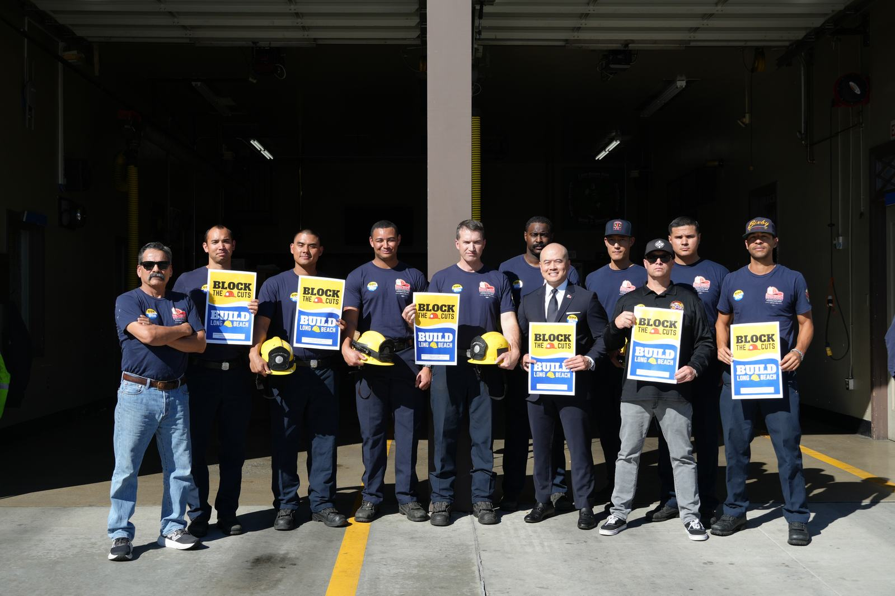
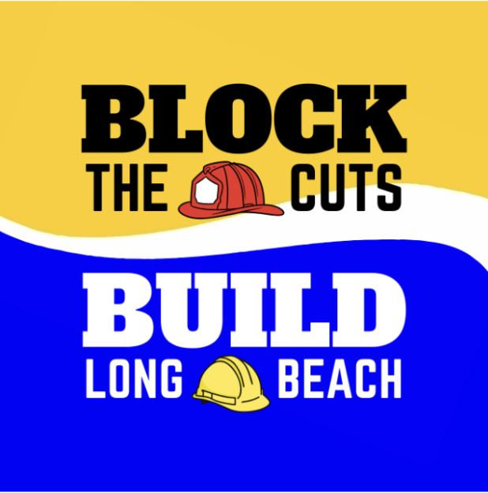
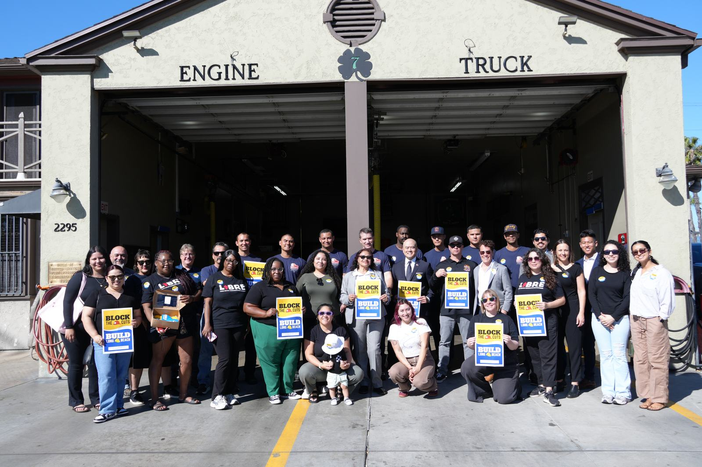

Block the Cuts and Build Long Beach
Protect Long Beach. Build its future.
A community-driven initiative to protect Long Beach from federal cuts and invest in housing stability, emergency response, and neighborhood infrastructure.
The challenge facing Long Beach
Pressure on the systems we rely on.
Locals are feeling the pressure of rising housing costs, strained emergency services, and aging infrastructure that needs urgent investment. Now, looming federal cuts threaten the funding for services meant to keep our communities safe and stable.
Block the Cuts and Build Long Beach is a community-driven initiative written by local organizations and firefighters. The measure would create a dedicated local funding source to strengthen emergency response, support housing stability, and repair critical infrastructure across the city.

Protecting working families
Most residents would not pay this tax.
- Renters do not pay this tax.
- Homeowners earning under $250,000 are exempt.
- Large commercial properties contribute their fair share.
- Independent oversight ensures transparency.
The initiative was written with working families in mind to secure more housing stability, stronger emergency response, safer neighborhood infrastructure, and strong public accountability for how funds are spent.

How it works
- Protect essential city services from federal funding cuts
- Invest in housing solutions that prevent displacement
- Strengthen life-saving emergency response
- Repair streets, parks, and public infrastructure
- Ensure strong public accountability and oversight of how funds are spent
Independent oversight and accountability
This initiative includes some of the strongest oversight and accountability provisions Long Beach has seen:
- Independent citizen oversight
- Public reporting on how funds are spent
- Clear spending requirements written directly into the ballot language
- Ongoing community engagement to monitor implementation and track results
Who has endorsed this campaign?
This campaign has been endorsed by the Long Beach Firefighters Association Local 372, Los Angeles Alliance Action Fund, and Long Beach Residents Empowered. The latest endorsements include the Teachers Association of Long Beach, California Community Foundation, and the Opportunity Beach Fund – Rex Richardson Ballot Measure Committee.
If your organization is interested in endorsing, send us an email.
Resource directory
Read the measure.
Press coverage
Regional coverage.
Paid for by Build Long Beach Committee, sponsored by LAANE Action Fund. Ad committee’s top funder: Long Beach Firefighters Association, IAFF Local 372.